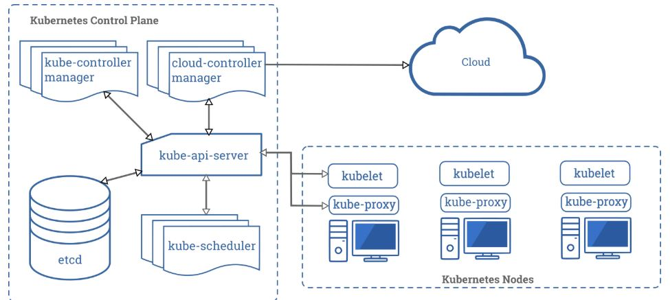

Шпаргалка по безопасности Kubernetes¶
Обзор¶
Данная шпаргалка является отправной точкой для защиты кластера Kubernetes. Она разделена на следующие категории:
- Получение оповещений об обновлениях Kubernetes
- ВВЕДЕНИЕ: Что такое Kubernetes?
- Защита хостов Kubernetes
- Защита компонентов Kubernetes
- Использование панели управления Kubernetes
- Лучшие практики безопасности Kubernetes: фаза сборки
- Лучшие практики безопасности Kubernetes: фаза развёртывания
- Лучшие практики безопасности Kubernetes: фаза выполнения
Для получения дополнительной информации о Kubernetes обратитесь к Приложению.
Получение оповещений об обновлениях безопасности и сообщение об уязвимостях¶
Подпишитесь на группу kubernetes-announce (https://kubernetes.io/docs/reference/issues-security/security/) для получения писем об объявлениях безопасности. Подробнее о том, как сообщать об уязвимостях, см. на странице отчётов о безопасности (https://kubernetes.io/docs/reference/issues-security/security).
ВВЕДЕНИЕ: Что такое Kubernetes?¶
Kubernetes — это движок оркестрации контейнеров с открытым исходным кодом для автоматизации развёртывания, масштабирования и управления контейнеризованными приложениями. Проект с открытым исходным кодом размещён в Cloud Native Computing Foundation (CNCF).
При развёртывании Kubernetes вы получаете кластер. Кластер Kubernetes состоит из набора рабочих машин, называемых узлами, на которых запускаются контейнеризованные приложения. Плоскость управления управляет рабочими узлами и подами в кластере.
Компоненты плоскости управления¶
Компоненты плоскости управления принимают глобальные решения о кластере, а также обнаруживают события кластера и реагируют на них. Она состоит из таких компонентов, как kube-apiserver, etcd, kube-scheduler, kube-controller-manager и cloud-controller-manager.
Компонент: kube-apiserver Описание: Предоставляет Kubernetes API. API-сервер является интерфейсом для плоскости управления Kubernetes.
Компонент: etcd Описание: Согласованное и высокодоступное хранилище ключей-значений, используемое в качестве резервного хранилища Kubernetes для всех данных кластера.
Компонент: kube-scheduler Описание: Отслеживает новые поды без назначенного узла и выбирает для них узел для запуска.
Компонент: kube-controller-manager Описание: Запускает процессы контроллеров. Логически каждый контроллер является отдельным процессом, но для снижения сложности все они компилируются в один двоичный файл и запускаются в одном процессе.
Компонент: cloud-controller-manager Описание: Менеджер облачных контроллеров позволяет связать кластер с API облачного провайдера и отделяет компоненты, взаимодействующие с облачной платформой, от компонентов, взаимодействующих только с кластером.
Компоненты узлов¶
Компоненты узлов выполняются на каждом узле, обслуживая работающие поды и обеспечивая среду выполнения Kubernetes. Включают такие компоненты, как kubelet, kube-proxy и среда выполнения контейнеров.
Компонент: kubelet Описание: Агент, выполняющийся на каждом узле кластера. Обеспечивает запуск контейнеров в поде.
Компонент: kube-proxy Описание: Сетевой прокси, работающий на каждом узле кластера, реализующий часть концепции Kubernetes Service.
Контейнер: runtime Описание: Среда выполнения контейнеров — программное обеспечение, отвечающее за запуск контейнеров.
РАЗДЕЛ 1: Защита хостов Kubernetes¶
Kubernetes может быть развёрнут различными способами: на «голом железе», локально и в публичном облаке (пользовательская сборка Kubernetes на виртуальных машинах или использование управляемого сервиса). Поскольку Kubernetes разработан для максимальной переносимости, клиенты могут легко переносить рабочие нагрузки и переключаться между несколькими установками.
Поскольку Kubernetes может быть настроен для широкого спектра сценариев, эта гибкость является слабым местом при защите кластеров Kubernetes. Инженеры, отвечающие за развёртывание платформы Kubernetes, должны знать обо всех потенциальных векторах атак и уязвимостях для своих кластеров.
Для усиления защиты базовых хостов кластеров Kubernetes рекомендуется устанавливать последние версии операционных систем, усиливать их защиту, внедрять необходимые системы управления патчами и конфигурацией, реализовывать основные правила брандмауэра и принимать специальные меры безопасности для центра обработки данных.
Обновление Kubernetes¶
Поскольку невозможно отследить все потенциальные векторы атак на кластер Kubernetes, первая и лучшая защита — всегда использовать последнюю стабильную версию Kubernetes.
В случае обнаружения уязвимостей в работающих контейнерах рекомендуется всегда обновлять исходный образ и переразвёртывать контейнеры. Старайтесь избегать прямых обновлений работающих контейнеров, поскольку это может нарушить связь между образом и контейнером.
Пример: apt-update
Обновление контейнеров чрезвычайно просто с функцией плавающих обновлений Kubernetes — это позволяет постепенно обновлять работающее приложение, обновляя его образы до последней версии.
График выпуска Kubernetes¶
Проект Kubernetes поддерживает ветки выпуска для трёх последних минорных версий и применяет соответствующие исправления, включая исправления безопасности, к этим трём веткам в зависимости от серьёзности и осуществимости. Патч-выпуски публикуются из этих веток с регулярной периодичностью, плюс дополнительные срочные выпуски при необходимости. Поэтому всегда рекомендуется обновлять кластер Kubernetes до последней доступной стабильной версии. Рекомендуется ознакомиться с политикой допустимого смещения версий для получения дополнительных сведений: https://kubernetes.io/docs/setup/release/version-skew-policy/.
Существует несколько методов, таких как плавающие обновления и миграция пулов узлов, позволяющих выполнить обновление с минимальными перебоями и простоями.
--
РАЗДЕЛ 2: Защита компонентов Kubernetes¶
В этом разделе обсуждается, как защитить компоненты Kubernetes. Охватываются следующие темы:
- Защита панели управления Kubernetes
- Ограничение доступа к etcd (Важно)
- Контроль сетевого доступа к чувствительным портам
- Контроль доступа к Kubernetes API
- Реализация управления доступом на основе ролей в Kubernetes
- Ограничение доступа к Kubelet
--
Защита панели управления Kubernetes¶
Панель управления Kubernetes — это web-приложение для управления кластером. Оно не является частью самого кластера Kubernetes и должно устанавливаться владельцами кластера. Поэтому существует множество руководств по его установке. К сожалению, большинство из них создают сервисный аккаунт с очень высокими привилегиями. Это привело к взлому Tesla и некоторых других компаний через такую небезопасно настроенную панель управления K8s. (Ссылка: Ресурсы облака Tesla взломаны для майнинга криптовалюты — https://arstechnica.com/information-technology/2018/02/tesla-cloud-resources-are-hacked-to-run-cryptocurrency-mining-malware/)
Для предотвращения атак через панель управления следуйте следующим советам:
- Не открывайте доступ к панели управления без дополнительной аутентификации публично. Нет необходимости получать доступ к такому мощному инструменту извне вашей локальной сети
- Включите управление доступом на основе ролей (RBAC) (см. ниже), чтобы ограничить сервисный аккаунт, используемый панелью управления
- Не предоставляйте высокие привилегии сервисному аккаунту панели управления
- Предоставляйте разрешения отдельно каждому пользователю, чтобы каждый видел только то, что должен видеть
- При использовании сетевых политик можно блокировать запросы к панели управления даже от внутренних подов (это не повлияет на туннель прокси через kubectl proxy)
- До версии 1.8 панель управления имела сервисный аккаунт с полными привилегиями, поэтому убедитесь, что не осталось привязки ролей для cluster-admin.
- Разверните панель управления с аутентифицирующим обратным прокси с включённой многофакторной аутентификацией. Это можно сделать с помощью встроенных OIDC
id_tokensили с использованием Kubernetes Impersonation. Это позволяет использовать панель управления с учётными данными пользователя вместо привилегированногоServiceAccount. Этот метод можно использовать как в локальных, так и в управляемых облачных кластерах.
--
Ограничение доступа к etcd (ВАЖНО)¶
etcd — критически важный компонент Kubernetes, хранящий информацию о состояниях и секретах, и он должен быть защищён иначе, чем остальная часть кластера. Доступ на запись к etcd API-сервера эквивалентен получению root-доступа ко всему кластеру, и даже доступ на чтение может быть использован для довольно лёгкого повышения привилегий.
Планировщик Kubernetes будет искать в etcd определения подов без узла. Затем он отправляет найденные поды доступному kubelet для планирования. Валидация отправляемых подов выполняется API-сервером перед записью в etcd, поэтому вредоносные пользователи, напрямую записывающие в etcd, могут обойти многие механизмы безопасности, например PodSecurityPolicies.
Администраторы должны всегда использовать надёжные учётные данные от API-серверов к etcd-серверу, такие как взаимная аутентификация через TLS-сертификаты клиента, и зачастую рекомендуется изолировать etcd-серверы за брандмауэром, к которому имеют доступ только API-серверы.
Ограничение доступа к основному экземпляру etcd¶
Предоставление другим компонентам кластера доступа на чтение или запись к основному экземпляру etcd для полного пространства ключей эквивалентно предоставлению доступа cluster-admin. Настоятельно рекомендуется использовать отдельные экземпляры etcd для других компонентов или использовать ACL etcd для ограничения доступа на чтение и запись подмножеством пространства ключей.
--
Контроль сетевого доступа к чувствительным портам¶
Настоятельно рекомендуется настроить аутентификацию и авторизацию на кластере и узлах кластера. Поскольку кластеры Kubernetes обычно слушают диапазон чётко определённых и характерных портов, злоумышленникам проще идентифицировать кластеры и атаковать их.
Ниже приведён обзор портов по умолчанию, используемых в Kubernetes. Убедитесь, что ваша сеть блокирует доступ к этим портам, и серьёзно рассмотрите возможность ограничения доступа к API-серверу Kubernetes только для доверенных сетей.
Узлы плоскости управления:
| Протокол | Диапазон портов | Назначение |
|---|---|---|
| TCP | 6443 | Kubernetes API Server |
| TCP | 2379-2380 | etcd server client API |
| TCP | 10250 | Kubelet API |
| TCP | 10259 | kube-scheduler |
| TCP | 10257 | kube-controller-manager |
| TCP | 10255 | Read-Only Kubelet API |
Рабочие узлы:
| Протокол | Диапазон портов | Назначение |
|---|---|---|
| TCP | 10248 | Kubelet Healthz API |
| TCP | 10249 | Kube-proxy Metrics API |
| TCP | 10250 | Kubelet API |
| TCP | 10255 | Read-Only Kubelet API |
| TCP | 10256 | Kube-proxy Healthz API |
| TCP | 30000-32767 | NodePort Services |
--
Контроль доступа к Kubernetes API¶
Первая линия защиты Kubernetes от злоумышленников — ограничение и защита доступа к запросам API, поскольку эти запросы используются для управления платформой Kubernetes. Дополнительную информацию можно найти в документации по адресу https://kubernetes.io/docs/reference/access-authn-authz/controlling-access/.
Этот раздел охватывает следующие темы:
- Как Kubernetes обрабатывает авторизацию API
- Внешняя аутентификация API для Kubernetes (рекомендуется)
- Встроенная аутентификация API Kubernetes (не рекомендуется)
- Реализация управления доступом на основе ролей в Kubernetes
- Ограничение доступа к Kubelet
--
Как Kubernetes обрабатывает авторизацию API¶
В Kubernetes необходимо пройти аутентификацию (войти в систему), прежде чем запрос может быть авторизован (получить разрешение на доступ), и Kubernetes ожидает атрибуты, общие для запросов REST API. Это означает, что существующие общеорганизационные или облачные системы контроля доступа, которые могут обрабатывать другие API, работают с авторизацией Kubernetes.
Когда Kubernetes авторизует запросы API с помощью API-сервера, разрешения по умолчанию запрещены. Он оценивает все атрибуты запроса относительно всех политик и разрешает или запрещает запрос. Все части запроса API должны быть разрешены какой-либо политикой для продолжения.
--
Внешняя аутентификация API для Kubernetes (РЕКОМЕНДУЕТСЯ)¶
Из-за слабости внутренних механизмов Kubernetes для аутентификации API мы настоятельно рекомендуем более крупным или производственным кластерам использовать один из методов внешней аутентификации API.
- OpenID Connect (OIDC) позволяет внешнюю аутентификацию, использование токенов с коротким сроком действия и централизованные группы для авторизации.
- Управляемые дистрибутивы Kubernetes, такие как GKE, EKS и AKS, поддерживают аутентификацию с использованием учётных данных от соответствующих IAM-провайдеров.
- Kubernetes Impersonation можно использовать как с управляемыми облачными кластерами, так и с локальными кластерами для внешней аутентификации без необходимости доступа к параметрам конфигурации API-сервера.
Помимо выбора подходящей системы аутентификации, доступ к API следует рассматривать как привилегированный и использовать многофакторную аутентификацию (MFA) для всех пользовательских доступов.
Дополнительную информацию см. в справочной документации по аутентификации Kubernetes по адресу https://kubernetes.io/docs/reference/access-authn-authz/authentication.
--
Варианты встроенной аутентификации API Kubernetes (НЕ РЕКОМЕНДУЕТСЯ)¶
Kubernetes предоставляет ряд внутренних механизмов для аутентификации API-сервера, однако они обычно подходят только для непроизводственных или небольших кластеров. Кратко рассмотрим каждый внутренний механизм и объясним, почему не следует их использовать.
-
Файл статических токенов: аутентификация использует токены открытого текста, хранящиеся в CSV-файле на узле(ах) API-сервера. ПРЕДУПРЕЖДЕНИЕ: Нельзя изменить учётные данные в этом файле без перезапуска API-сервера.
-
Клиентские сертификаты X509 доступны, но не подходят для производственного использования, поскольку Kubernetes не поддерживает отзыв сертификатов. В результате эти пользовательские учётные данные не могут быть изменены или отозваны без ротации корневого ключа центра сертификации и повторного выпуска всех сертификатов кластера.
-
Токены сервисных аккаунтов также доступны для аутентификации. Основное предназначение — позволить рабочим нагрузкам, выполняющимся в кластере, аутентифицироваться на API-сервере; однако они также могут использоваться для пользовательской аутентификации.
--
Реализация управления доступом на основе ролей в Kubernetes¶
Управление доступом на основе ролей (RBAC) — это метод регулирования доступа к компьютерным или сетевым ресурсам на основе ролей отдельных пользователей в организации. К счастью, Kubernetes поставляется со встроенным компонентом RBAC с ролями по умолчанию, позволяющими определять обязанности пользователей в зависимости от действий, которые клиент может захотеть выполнить. Следует использовать авторизаторы Node и RBAC совместно с плагином допуска NodeRestriction.
Компонент RBAC сопоставляет входящего пользователя или группу с набором разрешений, связанных с ролями. Эти разрешения объединяют глаголы (get, create, delete) с ресурсами (поды, сервисы, узлы) и могут быть ограничены пространством имён или кластером. Авторизация RBAC использует группу API rbac.authorization.k8s.io для принятия решений об авторизации, позволяя динамически настраивать политики через Kubernetes API.
Для включения RBAC запустите API-сервер с флагом --authorization-mode, установленным в список значений, разделённых запятой, включающий RBAC; например:
kube-apiserver --authorization-mode=Example,RBAC --other-options --more-options
Подробные примеры использования RBAC см. в документации Kubernetes по адресу https://kubernetes.io/docs/reference/access-authn-authz/rbac
--
Ограничение доступа к Kubelet¶
Kubelet предоставляет конечные точки HTTPS, предоставляющие мощный контроль над узлом и контейнерами. По умолчанию Kubelet допускает неаутентифицированный доступ к этому API. Производственные кластеры должны включить аутентификацию и авторизацию Kubelet.
Дополнительную информацию см. в документации по аутентификации/авторизации Kubelet по адресу https://kubernetes.io/docs/reference/access-authn-authz/kubelet-authn-authz/
--
РАЗДЕЛ 3: Лучшие практики безопасности Kubernetes: фаза сборки¶
На этапе сборки следует обеспечить безопасность образов контейнеров Kubernetes, создавая безопасные образы и сканируя их на наличие известных уязвимостей.
--
Что такое образ контейнера?¶
Образ контейнера (CI) — это неизменяемый, лёгкий, автономный пакет, содержащий всё необходимое для запуска приложения: код приложения, среду выполнения, системные библиотеки, конфигурацию и системные инструменты. Образы строятся как многоуровневые артефакты только для чтения, переносимые между хостами, но разделяющие ядро операционной системы хоста. См. Docker: Что такое контейнер? (https://www.docker.com/resources/what-container).
Образы контейнеров должны создаваться на основе утверждённого и безопасного базового образа. Этот базовый образ должен регулярно сканироваться и отслеживаться, чтобы гарантировать, что все образы основаны на безопасном и подлинном образе. Реализуйте строгие политики управления, определяющие, как образы создаются и хранятся в доверенных реестрах образов.
--
Убедитесь, что образы актуальны¶
Убедитесь, что ваши образы (и любые сторонние инструменты, которые вы включаете) актуальны и используют последние версии своих компонентов.
--
Используйте только авторизованные образы в вашей среде¶
Загрузка и запуск образов контейнеров из неизвестных источников очень опасна. Убедитесь, что разрешён запуск только образов, соответствующих политике организации, иначе организация рискует запустить уязвимые или даже вредоносные контейнеры.
--
Используйте CI-пайплайн для контроля и выявления уязвимостей¶
Реестр контейнеров Kubernetes служит центральным репозиторием всех образов контейнеров в системе. В зависимости от ваших потребностей можно использовать публичный репозиторий или иметь частный реестр в качестве реестра контейнеров. Рекомендуется хранить утверждённые образы в частном реестре и публиковать в эти реестры только утверждённые образы, что автоматически сокращает количество потенциальных образов в вашем пайплайне до малой доли от сотен тысяч публично доступных образов.
Также настоятельно рекомендуется добавить CI-пайплайн, интегрирующий оценку безопасности (например, сканирование уязвимостей) в процесс сборки. Этот пайплайн должен проверять весь код, утверждённый для производства и используемый для сборки образов. После сборки образа он должен сканироваться на предмет уязвимостей безопасности. Только если проблем не обнаружено, образ должен публиковаться в частный реестр и затем развёртываться в производство. Если механизм оценки безопасности обнаруживает проблемы в коде, это должно создать сбой в пайплайне, что поможет обнаружить образы с проблемами безопасности и предотвратить их попадание в реестр образов.
Многие репозитории исходного кода предоставляют возможности сканирования (например, Github, GitLab), а многие CI-инструменты предлагают интеграцию со сканерами уязвимостей с открытым исходным кодом, такими как Trivy или Grype.
Разрабатываются плагины авторизации образов для Kubernetes, предотвращающие доставку несанкционированных образов. Дополнительную информацию см. в PR https://github.com/kubernetes/kubernetes/pull/27129.
--
Минимизируйте функции во всех образах¶
В качестве лучшей практики Google и другие технологические гиганты строго ограничивают код в своих контейнерах выполнения уже многие годы. Такой подход улучшает соотношение сигнал/шум для сканеров (например, CVE) и снижает нагрузку на установление происхождения до того, что действительно необходимо.
Рассмотрите использование минимальных образов, таких как дистрибутивно-минимальные образы (см. ниже). Если это невозможно, не включайте менеджеры пакетов ОС или оболочки в образы, поскольку они могут содержать неизвестные уязвимости. Если вы абсолютно вынуждены включить какие-либо пакеты ОС, удалите менеджер пакетов на более позднем шаге процесса генерации.
--
По возможности используйте дистрибутивно-минимальные или пустые образы¶
Дистрибутивно-минимальные образы резко сокращают поверхность атаки, поскольку не содержат оболочек и включают меньше пакетов, чем другие образы. Дополнительную информацию об этих образах см. на https://github.com/GoogleContainerTools/distroless.
Пустой образ, идеально подходящий для статически компилируемых языков, таких как Go, — поверхность атаки поистине минимальна: только ваш код!
Дополнительную информацию см. на https://hub.docker.com/_/scratch
РАЗДЕЛ 4: Лучшие практики безопасности Kubernetes: фаза развёртывания¶
После создания инфраструктуры Kubernetes её необходимо безопасно настроить до развёртывания рабочих нагрузок. При настройке инфраструктуры убедитесь, что у вас есть видимость того, какие образы развёртываются и как они развёртываются, иначе вы не сможете выявлять нарушения политик безопасности и реагировать на них. Перед развёртыванием ваша система должна знать и быть в состоянии сообщить вам:
- Что развёртывается — включая информацию об используемом образе, например компоненты или уязвимости, и поды, которые будут развёрнуты.
- Куда будет развёртываться — в какие кластеры, пространства имён и узлы.
- Как развёртывается — запускается ли с привилегиями, с какими другими развёртываниями может взаимодействовать, какой контекст безопасности пода применяется, если есть.
- К чему имеет доступ — включая секреты, тома и другие компоненты инфраструктуры, такие как хост или API оркестратора.
- Соответствует ли требованиям? — выполняет ли требования ваших политик и требований безопасности.
--
Код, использующий пространства имён для изоляции ресурсов Kubernetes¶
Пространства имён предоставляют возможность создавать логические разделы, обеспечивать разделение ресурсов и ограничивать область действия разрешений пользователей.
--
Установка пространства имён для запроса¶
Для установки пространства имён текущего запроса используйте флаг --namespace. Примеры:
kubectl run nginx --image=nginx --namespace=<insert-namespace-name-here>
kubectl get pods --namespace=<insert-namespace-name-here>
--
Установка предпочтительного пространства имён¶
Можно постоянно сохранить пространство имён для всех последующих команд kubectl в этом контексте с помощью:
kubectl config set-context --current --namespace=<insert-namespace-name-here>
Затем проверьте это следующей командой:
kubectl config view --minify | grep namespace:
Подробнее о пространствах имён см. на https://kubernetes.io/docs/concepts/overview/working-with-objects/namespaces
--
Используйте ImagePolicyWebhook для управления происхождением образов¶
Настоятельно рекомендуется использовать контроллер допуска ImagePolicyWebhook для предотвращения использования несанкционированных образов, отклонения подов, использующих несанкционированные образы, и отказа от образов, соответствующих следующим критериям:
- Образы, не проходившие сканирование в последнее время
- Образы, использующие базовый образ, явно не разрешённый
- Образы из небезопасных реестров
Подробнее о webhook см. на https://kubernetes.io/docs/reference/access-authn-authz/admission-controllers/#imagepolicywebhook
--
Реализуйте непрерывное сканирование уязвимостей¶
Поскольку новые уязвимости постоянно обнаруживаются, вы не всегда можете знать, не содержат ли ваши контейнеры недавно раскрытых уязвимостей (CVE) или устаревших пакетов. Для поддержания высокого уровня безопасности регулярно сканируйте в производстве как собственные контейнеры (приложения, которые вы создали и ранее сканировали), так и сторонние контейнеры (полученные из доверенных репозиториев и поставщиков).
Проекты с открытым исходным кодом, такие как ThreatMapper, могут помочь в выявлении и приоритизации уязвимостей.
--
Применяйте контекст безопасности к подам и контейнерам¶
Контекст безопасности — это свойство, определённое в deployment yaml и управляющее параметрами безопасности для всех подов/контейнеров/томов. Оно должно применяться во всей инфраструктуре. При правильной реализации свойства контекста безопасности повсеместно можно устранить целые классы атак, основанных на привилегированном доступе. Например, любая атака, зависящая от установки программного обеспечения или записи в файловую систему, будет остановлена, если указать файловые системы только для чтения в контексте безопасности.
При настройке контекста безопасности для подов предоставляйте только те привилегии, которые необходимы для работы ресурсов в контейнерах и томах. Некоторые важные параметры свойства контекста безопасности:
Настройки контекста безопасности:
-
SecurityContext->runAsNonRoot Описание: Указывает, что контейнеры должны запускаться от имени пользователя без root-прав.
-
SecurityContext->Capabilities Описание: Управляет возможностями Linux, назначаемыми контейнеру.
-
SecurityContext->readOnlyRootFilesystem Описание: Управляет возможностью записи контейнера в корневую файловую систему.
-
PodSecurityContext->runAsNonRoot Описание: Предотвращает запуск контейнера с пользователем 'root' в составе пода.
Пример контекста безопасности: определение пода с параметрами контекста безопасности¶
apiVersion: v1
kind: Pod
metadata:
name: hello-world
spec:
containers:
# спецификация контейнеров пода
# ...
# ...
# Контекст безопасности
securityContext:
readOnlyRootFilesystem: true
runAsNonRoot: true
Дополнительную информацию о контексте безопасности для подов см. в документации по адресу https://kubernetes.io/docs/tasks/configure-pod-container/security-context
--
Непрерывно оценивайте привилегии, используемые контейнерами¶
Настоятельно рекомендуется, чтобы все контейнеры соответствовали принципу минимальных привилегий, поскольку риск безопасности во многом определяется возможностями, привязками ролей и привилегиями, предоставленными контейнерам. Каждый контейнер должен иметь только минимальные привилегии и возможности, позволяющие ему выполнять свою предназначенную функцию.
Используйте Pod Security Standards и встроенный контроллер допуска Pod Security Admission для применения уровней привилегий контейнеров¶
Pod Security Standards в сочетании с контроллером допуска Pod Security Admission позволяют администраторам кластера применять требования к полям securityContext подов. Существуют три профиля Pod Security Standard:
- Privileged: Без ограничений, допускает известные эскалации привилегий. Предназначен для использования с системными и инфраструктурными рабочими нагрузками, требующими привилегий для правильной работы. Все настройки securityContext разрешены.
- Baseline: Минимально ограничительная политика, разработанная для обычных контейнеризованных рабочих нагрузок с предотвращением известных эскалаций привилегий. Предназначена для разработчиков и операторов некритических приложений. Наиболее опасные настройки securityContext, такие как securityContext.privileged, hostPID, hostPath, hostIPC, не разрешены.
- Restricted: Наиболее ограничительная политика, разработанная для применения текущих практик усиления защиты подов за счёт некоторой совместимости. Предназначена для критически важных с точки зрения безопасности рабочих нагрузок или ненадёжных пользователей. Restricted включает все требования политики Baseline плюс значительно более строгие требования, такие как сброс всех возможностей, применение runAsNotRoot и другие.
Каждый из профилей имеет определённые базовые настройки, которые можно найти подробнее здесь.
Контроллер допуска Pod Security Admission позволяет применять, проверять или предупреждать о нарушении определённой политики. Режимы audit и warn можно использовать для определения того, будет ли конкретный Pod Security Standard в обычных условиях препятствовать развёртыванию пода при установке в режим enforce.
Ниже приведён пример пространства имён, допускающего только развёртывание подов, соответствующих ограничительному Pod Security Standard:
apiVersion: v1
kind: Namespace
metadata:
name: policy-test
labels:
pod-security.kubernetes.io/enforce: restricted
pod-security.kubernetes.io/audit: restricted
pod-security.kubernetes.io/warn: restricted
Администраторы кластера должны правильно организовывать и применять политики к пространствам имён кластера, допуская привилегированную политику только в тех пространствах имён, где это абсолютно необходимо, например для критических служб кластера, требующих доступа к базовому хосту. Пространствам имён следует устанавливать наименьшую применимую Pod Security Policy, соответствующую их уровню риска.
Если требуется более детальное применение политик помимо трёх профилей (Privileged, Baseline, Restricted), можно использовать сторонние контроллеры допуска, такие как OPA Gatekeeper или Kyverno, или встроенную Validating Admission Policy.
Использование политик безопасности подов для управления атрибутами безопасности подов, включая уровни привилегий контейнеров¶
Предупреждение Kubernetes устарел Pod Security Policies в пользу Pod Security Standards и контроллера допуска Pod Security Admission, и он был удалён из Kubernetes в v1.25. Рассмотрите использование Pod Security Standards и контроллера допуска Pod Security Admission.
Все политики безопасности должны включать следующие условия:
- Процессы приложений не запускаются от имени root.
- Эскалация привилегий не разрешена.
- Корневая файловая система доступна только для чтения.
- Используется монтирование файловой системы /proc по умолчанию (маскированное).
- Сеть хоста или пространство процессов НЕ должны использоваться — использование
hostNetwork: trueприведёт к игнорированию NetworkPolicies, поскольку под будет использовать сеть хоста. - Неиспользуемые и ненужные возможности Linux устраняются.
- Используйте параметры SELinux для более точного контроля процессов.
- Предоставляйте каждому приложению собственный сервисный аккаунт Kubernetes.
- Если контейнеру не нужен доступ к Kubernetes API, не позволяйте ему монтировать учётные данные сервисного аккаунта.
Дополнительную информацию о политиках безопасности подов см. в документации по адресу https://kubernetes.io/docs/concepts/policy/pod-security-policy/.
--
Обеспечение дополнительной безопасности с помощью service mesh¶
Service mesh — это уровень инфраструктуры, который может быстро, безопасно и надёжно обрабатывать коммуникацию между сервисами в приложениях, что позволяет снизить сложность управления микросервисами и развёртываниями. Он обеспечивает унифицированный способ защиты, подключения и мониторинга микросервисов, и service mesh отлично справляется с операционными задачами и проблемами при запуске контейнеров и микросервисов.
Преимущества service mesh¶
Service mesh предоставляет следующие преимущества:
- Наблюдаемость
Генерирует метрики трассировки и телеметрии, что позволяет легко понять систему и быстро выявить причины проблем.
- Специализированные функции безопасности
Обеспечивает функции безопасности, которые быстро выявляют любой скомпрометированный трафик, входящий в кластер, и могут защитить сервисы внутри сети при правильной реализации. Также может помочь управлять безопасностью через mTLS, контроль входящего и исходящего трафика и другие механизмы.
- Возможность защиты микросервисов с помощью mTLS
Поскольку защита микросервисов сложна, существует множество инструментов для обеспечения их безопасности. Однако service mesh является наиболее элегантным решением для шифрования передаваемого трафика внутри сети.
Он обеспечивает защиту с помощью взаимного шифрования TLS (mTLS) трафика между сервисами, а mesh может автоматически шифровать и дешифровать запросы и ответы, снимая эту нагрузку с разработчиков приложений. Mesh также может улучшить производительность, отдавая приоритет повторному использованию существующих постоянных соединений, что снижает необходимость в вычислительно дорогостоящем создании новых. С service mesh можно защитить трафик по сети, а также обеспечить надёжную аутентификацию и авторизацию на основе идентичности для каждого микросервиса.
Мы видим, что service mesh имеет большую ценность для корпоративных компаний, поскольку он позволяет видеть, включён ли и работает ли mTLS между каждым из ваших сервисов. Также можно получать немедленные оповещения об изменении статуса безопасности.
- Контроль входящего и исходящего трафика
Позволяет отслеживать и устранять скомпрометированный трафик по мере его прохождения через mesh. Например, если Istio интегрируется с Kubernetes в качестве контроллера входящего трафика, он может обрабатывать балансировку нагрузки для входящего трафика. Это позволяет защитникам добавить уровень безопасности на периметре с правилами входящего трафика, тогда как контроль исходящего трафика позволяет видеть и управлять внешними сервисами и контролировать взаимодействие сервисов с трафиком.
- Операционный контроль
Позволяет командам безопасности и платформы устанавливать правильные макроконтроли для применения средств управления доступом, позволяя разработчикам делать необходимые настройки для быстрой работы в этих рамках.
- Возможность управления RBAC
Service mesh может помочь защитникам реализовать надёжную систему управления доступом на основе ролей (RBAC), которая, пожалуй, является одним из наиболее критических требований в крупных инженерных организациях. Даже безопасная система может быть легко обойдена чрезмерно привилегированными пользователями или сотрудниками, а система RBAC может:
- Ограничить привилегированных пользователей до минимальных привилегий, необходимых для выполнения рабочих обязанностей
- Обеспечить, что доступ к системам установлен как «запретить всё» по умолчанию
- Помочь разработчикам убедиться, что документация с описанием ролей и обязанностей создана, что является одной из наиболее критических проблем безопасности в корпоративной среде.
Недостатки service mesh¶
Хотя service mesh имеет много преимуществ, он также несёт в себе уникальный набор проблем, некоторые из которых перечислены ниже:
- Добавляет новый уровень сложности
Когда прокси, sidecar-контейнеры и другие компоненты вводятся в уже сложную среду, это резко увеличивает сложность разработки и операций.
- Требует дополнительной экспертизы
Если mesh, такой как Istio, добавляется поверх оркестратора, такого как Kubernetes, операторам необходимо становиться экспертами в обеих технологиях.
- Может замедлить инфраструктуру
Поскольку service mesh является инвазивной и сложной технологией, он может значительно замедлить архитектуру.
- Требует принятия ещё одной платформы
Поскольку service mesh являются инвазивными, они вынуждают разработчиков и операторов адаптироваться к сильно самоутверждённой платформе и соответствовать её правилам.
Реализация централизованного управления политиками¶
Существует ряд проектов, способных обеспечить централизованное управление политиками для кластера Kubernetes, включая проект Open Policy Agent (OPA), Kyverno или Validating Admission Policy (встроенная функция, ставшая общедоступной в версии 1.30). Для более детального примера в этой шпаргалке мы сосредоточимся на OPA.
OPA был создан в 2016 году для унификации применения политик в различных технологиях и системах, и он может использоваться для применения политик на такой платформе, как Kubernetes. В настоящее время OPA входит в состав CNCF в качестве инкубационного проекта. Он может создать унифицированный метод применения политик безопасности в стеке. Хотя разработчики могут налагать детальный контроль над кластером с помощью RBAC и политик безопасности подов, эти технологии применяются только к кластеру, но не за его пределами.
Поскольку OPA — это универсальный, доменно-независимый инструмент применения политик, не основанный ни на каком другом проекте, запросы политик и решения не следуют определённому формату. Таким образом, его можно интегрировать с API, демоном Linux SSH, объектным хранилищем, таким как Ceph, и можно использовать любые допустимые данные JSON в качестве атрибутов запроса, если они предоставляют необходимые данные. OPA позволяет выбирать входные и выходные данные — например, можно настроить OPA для возврата объекта JSON True или False, числа, строки или даже сложного объекта данных.
Наиболее распространённые варианты использования OPA¶
OPA для авторизации приложений¶
OPA может предоставить разработчикам готовую технологию авторизации, чтобы команде не пришлось разрабатывать её с нуля. Он использует декларативный язык политик, специально предназначенный для написания и применения правил, таких как «Алиса может записывать в этот репозиторий» или «Боб может обновлять этот аккаунт». Эта технология предоставляет богатый набор инструментов, позволяющих разработчикам интегрировать политики в приложения и предоставлять конечным пользователям возможность создавать политики для своих арендаторов.
Если у вас уже есть собственное решение для авторизации приложений, возможно, нет смысла заменять его OPA. Но если вы хотите повысить эффективность разработчиков, переходя к решению, масштабирующемуся с микросервисами и позволяющему декомпозировать монолитные приложения, вам потребуется распределённая система авторизации, и OPA (или один из конкурентов) может стать ответом.
OPA для контроля допуска Kubernetes¶
Поскольку Kubernetes предоставляет разработчикам огромный контроль над традиционными хранилищами «вычисления, сети и хранилища», они могут использовать его для настройки сети точно так, как хотят, и хранилища точно так, как хотят. Но это означает, что администраторы и команды безопасности должны гарантировать, что разработчики не навредят себе (или своим соседям).
OPA может решить эти проблемы безопасности, позволяя безопасности строить политики, требующие, чтобы все образы контейнеров были из доверенных источников, предотвращать запуск разработчиками программного обеспечения от имени root, гарантировать, что хранилище всегда помечено битом шифрования и не удаляется только потому, что под перезапускается, ограничивать доступ к интернету и т.д.
Это также позволяет администраторам убедиться, что изменения политик не причиняют больше вреда, чем пользы. OPA интегрируется непосредственно в API-сервер Kubernetes и имеет полные полномочия отклонять любой ресурс, который политика допуска считает нежелательным в кластере — будь то вычислительный, сетевой или связанный с хранилищем. Кроме того, политику можно запускать вне диапазона для мониторинга результатов, а политики OPA можно предоставлять на ранних стадиях жизненного цикла разработки (например, в пайплайне CI/CD или даже на ноутбуках разработчиков), если разработчикам нужна ранняя обратная связь.
OPA для авторизации service mesh¶
И наконец, OPA может регулировать использование архитектур service mesh. Зачастую администраторы обеспечивают соответствие нормативным требованиям, встраивая политики в service mesh, даже когда это связано с изменением исходного кода. Даже если вы не встраиваете OPA для реализации логики авторизации приложений (основной вариант использования, обсуждаемый выше), вы можете контролировать API-микросервисы, помещая политики авторизации в service mesh. Но если вас мотивирует безопасность, вы можете реализовать политики в service mesh для ограничения горизонтального перемещения в архитектуре микросервисов.
Ограничение использования ресурсов в кластере¶
Важно определять квоты ресурсов для контейнеров в Kubernetes, поскольку все ресурсы в кластере Kubernetes создаются с неограниченными лимитами CPU и запросами/лимитами памяти по умолчанию. Если запускаются контейнеры без ограничений ресурсов, система рискует столкнуться с атаками типа «отказ в обслуживании» (DoS) или сценариями «шумного соседа». К счастью, OPA может использовать квоты ресурсов для пространства имён, что ограничит количество или ёмкость ресурсов, предоставляемых этому пространству имён, и ограничит его, определяя ёмкость CPU, памяти или постоянного дискового пространства.
Кроме того, OPA может ограничивать количество подов, сервисов или томов в каждом пространстве имён и ограничивать максимальный или минимальный размер некоторых из вышеупомянутых ресурсов. Квоты ресурсов предоставляют лимиты по умолчанию, если они не указаны, и предотвращают запрос пользователями неоправданно высоких или низких значений для часто резервируемых ресурсов, таких как память.
Ниже приведён пример определения квоты ресурсов пространства имён в соответствующем yaml. Он ограничивает количество подов в пространстве имён до 4, устанавливает запросы CPU от 1 до 2 и запросы памяти от 1 ГБ до 2 ГБ.
compute-resources.yaml:
apiVersion: v1
kind: ResourceQuota
metadata:
name: compute-resources
spec:
hard:
pods: "4"
requests.cpu: "1"
requests.memory: 1Gi
limits.cpu: "2"
limits.memory: 2Gi
Назначение квоты ресурсов пространству имён:
kubectl create -f ./compute-resources.yaml --namespace=myspace
Дополнительную информацию о настройке квот ресурсов см. в документации Kubernetes по адресу https://kubernetes.io/docs/concepts/policy/resource-quotas/.
Используйте сетевые политики Kubernetes для контроля трафика между подами и кластерами¶
Если кластер запускает различные приложения, скомпрометированное приложение может атаковать другие соседние приложения. Этот сценарий может произойти, поскольку Kubernetes по умолчанию позволяет каждому поду связываться с каждым другим подом. Если разрешён входящий трафик из внешней конечной точки сети, под сможет отправлять трафик на конечную точку за пределами кластера.
Настоятельно рекомендуется, чтобы разработчики реализовывали сетевую сегментацию, поскольку это ключевой контроль безопасности, гарантирующий, что контейнеры могут взаимодействовать только с другими утверждёнными контейнерами, и предотвращающий горизонтальное перемещение злоумышленников по контейнерам. Однако применение сетевой сегментации в облаке затруднено из-за «динамичной» природы сетевых идентичностей контейнеров (IP).
Хотя пользователи Google Cloud Platform могут воспользоваться автоматическими правилами брандмауэра, предотвращающими межкластерное взаимодействие, другие пользователи могут применять аналогичные реализации при локальном развёртывании с использованием сетевых брандмауэров или решений SDN. Также Kubernetes Network SIG работает над методами, которые значительно улучшат политики взаимодействия между подами. Новый API сетевых политик должен удовлетворить потребность в создании правил брандмауэра вокруг подов, ограничивающих сетевой доступ контейнера.
Ниже приведён пример сетевой политики, управляющей сетью для подов «backend», которая допускает только входящий сетевой доступ от подов «frontend»:
POST /apis/net.alpha.kubernetes.io/v1alpha1/namespaces/tenant-a/networkpolicys
{
"kind": "NetworkPolicy",
"metadata": {
"name": "pol1"
},
"spec": {
"allowIncoming": {
"from": [{
"pods": { "segment": "frontend" }
}],
"toPorts": [{
"port": 80,
"protocol": "TCP"
}]
},
"podSelector": {
"segment": "backend"
}
}
}
Дополнительную информацию о настройке сетевых политик см. в документации Kubernetes по адресу https://kubernetes.io/docs/concepts/services-networking/network-policies.
Защита данных¶
Храните секреты как секреты¶
Важно понимать, как конфиденциальные данные, такие как учётные данные и ключи, хранятся и доступны в вашей инфраструктуре. Kubernetes хранит их в «секрете» — небольшом объекте, содержащем конфиденциальные данные, например пароль или токен.
Лучше всего монтировать секреты в тома только для чтения в контейнерах, а не раскрывать их как переменные среды. Кроме того, секреты должны храниться отдельно от образа или пода, иначе любой, имеющий доступ к образу, будет иметь доступ и к секрету, хотя под не может получить доступ к секретам другого пода. Сложные приложения, обрабатывающие несколько процессов и имеющие публичный доступ, особенно уязвимы в этом отношении.
Шифруйте секреты в состоянии покоя¶
Всегда шифруйте резервные копии с помощью хорошо проверенного решения для резервного копирования и шифрования и рассматривайте возможность использования полного шифрования диска там, где это возможно, поскольку база данных etcd содержит любую информацию, доступную через Kubernetes API. Доступ к этой базе данных может предоставить злоумышленнику значительную видимость состояния кластера.
Kubernetes поддерживает шифрование в состоянии покоя — функцию, введённую в 1.7 и ставшую v1 beta с версии 1.13, которая шифрует ресурсы Secret в etcd и предотвращает просмотр содержимого этих секретов теми, кто имеет доступ к резервным копиям etcd. Хотя эта функция в настоящее время является бета-версией, она обеспечивает дополнительный уровень защиты, когда резервные копии не зашифрованы или злоумышленник получает доступ на чтение к etcd.
Альтернативы ресурсам Kubernetes Secret¶
Поскольку внешний менеджер секретов может хранить и управлять секретами вместо их хранения в Kubernetes Secrets, стоит рассмотреть эту альтернативу безопасности. Менеджер предоставляет ряд преимуществ по сравнению с использованием Kubernetes Secrets, включая возможность управления секретами в нескольких кластерах (или облаках) и возможность централизованного управления и ротации секретов.
Дополнительную информацию о секретах и их альтернативах см. в документации по адресу https://kubernetes.io/docs/concepts/configuration/secret/.
Также см. шпаргалку Управление секретами для получения дополнительных сведений и лучших практик управления секретами.
Поиск раскрытых секретов¶
Настоятельно рекомендуется проверить секретный материал, присутствующий в контейнере, в соответствии с принципом «минимальных привилегий» и оценить риск, создаваемый компрометацией.
Помните, что инструменты с открытым исходным кодом, такие как SecretScanner и ThreatMapper, могут сканировать файловые системы контейнеров на наличие конфиденциальных ресурсов, таких как API-токены, пароли и ключи. Такие ресурсы будут доступны любому пользователю, имеющему доступ к незашифрованной файловой системе контейнера, — при сборке, в состоянии покоя в реестре или резервной копии, или во время выполнения.
РАЗДЕЛ 5: Лучшие практики безопасности Kubernetes: фаза выполнения¶
Когда инфраструктура Kubernetes переходит в фазу выполнения, контейнеризованные приложения сталкиваются с множеством новых проблем безопасности. Необходимо получить видимость работающей среды для обнаружения угроз и реагирования на них по мере возникновения.
Если вы проактивно защищаете контейнеры и развёртывания Kubernetes на этапах сборки и развёртывания, это значительно снижает вероятность инцидентов безопасности во время выполнения и последующие усилия по реагированию на них.
Прежде всего, отслеживайте наиболее важные с точки зрения безопасности действия контейнеров, включая:
- Активность процессов
- Сетевые коммуникации между контейнеризованными сервисами
- Сетевые коммуникации между контейнеризованными сервисами и внешними клиентами и серверами
Обнаружение аномалий путём наблюдения за поведением контейнеров обычно проще в контейнерах, чем в виртуальных машинах, благодаря декларативной природе контейнеров и Kubernetes. Эти атрибуты позволяют упростить интроспекцию того, что развёрнуто, и ожидаемой активности.
Используйте Pod Security Admission для предотвращения развёртывания рискованных контейнеров/подов¶
Ранее рекомендованная Pod Security Policy устарела и заменена Pod Security Admission — новой функцией, позволяющей применять политики безопасности к подам в кластере Kubernetes.
Рекомендуется использовать уровень baseline как минимальное требование безопасности для всех подов для обеспечения стандартного уровня безопасности в кластере. Однако кластеры должны стремиться применять уровень restricted, следующий лучшим практикам усиления защиты подов.
Дополнительную информацию о настройке Pod Security Admission см. в документации по адресу https://kubernetes.io/docs/tasks/configure-pod-container/enforce-standards-admission-controller/.
Безопасность среды выполнения контейнеров¶
Если контейнеры защищены на этапе выполнения, команды безопасности имеют возможность обнаруживать угрозы и аномалии и реагировать на них, пока контейнеры или рабочие нагрузки находятся в рабочем состоянии. Обычно это осуществляется путём перехвата низкоуровневых системных вызовов и поиска событий, которые могут указывать на компрометацию. Некоторые примеры событий, которые должны инициировать оповещение:
- Запуск оболочки внутри контейнера
- Монтирование контейнером чувствительного пути с хоста, такого как /proc
- Неожиданное чтение конфиденциального файла в работающем контейнере, такого как /etc/shadow
- Установка исходящего сетевого соединения
Инструменты с открытым исходным кодом, такие как Falco от Sysdig, могут помочь операторам быстро настроить безопасность среды выполнения контейнеров, предоставляя защитникам большое количество готовых обнаружений, а также возможность создавать пользовательские правила.
Изоляция контейнеров¶
Когда средам выполнения контейнеров разрешено напрямую обращаться к ядру хоста, ядро часто взаимодействует с оборудованием и устройствами для ответа на запрос. Хотя Cgroups и пространства имён предоставляют контейнерам определённую изоляцию, ядро по-прежнему представляет большую поверхность атаки. Когда защитники имеют дело с многоарендными и крайне ненадёжными кластерами, они часто добавляют дополнительный уровень изоляции для обеспечения отсутствия побегов из контейнера и эксплойтов ядра. Ниже рассмотрим несколько технологий с открытым исходным кодом, помогающих дополнительно изолировать работающие контейнеры от ядра хоста:
- Kata Containers: OSS-проект, использующий уменьшенные виртуальные машины для минимизации потребления ресурсов и максимизации производительности для дальнейшей изоляции контейнеров.
- gVisor: более лёгкое ядро, чем виртуальная машина (даже уменьшенная). Это собственное независимое ядро, написанное на Go, находящееся между контейнером и ядром хоста. Это надёжная изоляционная среда — gVisor поддерживает ~70% системных вызовов Linux из контейнера, но использует только около 20 системных вызовов к ядру хоста.
- Firecracker: сверхлёгкая виртуальная машина, работающая в пространстве пользователя. Поскольку она защищена политиками seccomp, cgroup и пространства имён, системные вызовы очень ограничены. Firecracker создан с учётом безопасности, однако может не поддерживать все развёртывания Kubernetes или среды выполнения контейнеров.
Предотвращение загрузки контейнерами нежелательных модулей ядра¶
Поскольку ядро Linux автоматически загружает модули ядра с диска при необходимости в определённых обстоятельствах, например при подключении оборудования или монтировании файловой системы, это может быть значительной поверхностью атаки. Особенно актуально для Kubernetes то, что даже непривилегированные процессы могут вызывать загрузку определённых модулей ядра, связанных с сетевыми протоколами, просто создав сокет соответствующего типа. Эта ситуация может позволить злоумышленникам использовать уязвимость в модулях ядра, которые, по предположению администратора, не использовались.
Для предотвращения автоматической загрузки конкретных модулей можно удалить их с узла или добавить правила для их блокировки. В большинстве дистрибутивов Linux это можно сделать, создав файл, такой как /etc/modprobe.d/kubernetes-blacklist.conf со следующим содержимым:
# DCCP вряд ли нужен, имел несколько серьёзных
# уязвимостей и плохо поддерживается.
blacklist dccp
# SCTP не используется в большинстве кластеров Kubernetes и также имел
# уязвимости в прошлом.
blacklist sctp
Для более обобщённой блокировки загрузки модулей можно использовать Linux Security Module (такой как SELinux), чтобы полностью запретить разрешение module_request для контейнеров, предотвращая загрузку ядром модулей для контейнеров при любых обстоятельствах. (Поды по-прежнему смогут использовать модули, загруженные вручную, или модули, загруженные ядром от имени какого-либо более привилегированного процесса).
Сравнение и анализ различных активностей во время выполнения в подах одних и тех же развёртываний¶
Когда контейнеризованные приложения реплицируются в целях высокой доступности, отказоустойчивости или масштабирования, эти реплики должны вести себя почти одинаково. Если реплика имеет значительные отклонения от других, защитники захотят провести дополнительное расследование. Инструмент безопасности Kubernetes должен быть интегрирован с другими внешними системами (email, PagerDuty, Slack, Google Cloud Security Command Center, SIEM и т.д.) и использовать метки или аннотации развёртывания для оповещения команды, ответственной за данное приложение, при обнаружении потенциальной угрозы. Если вы выбираете коммерческого поставщика средств безопасности Kubernetes, он должен поддерживать широкий спектр интеграций с внешними инструментами.
Мониторинг сетевого трафика для ограничения ненужных или небезопасных коммуникаций¶
Контейнеризованные приложения обычно активно используют сеть кластера, поэтому наблюдение за активным сетевым трафиком является хорошим способом понять, как приложения взаимодействуют друг с другом, и выявить неожиданные коммуникации. Следует наблюдать за активным сетевым трафиком и сравнивать его с тем, что разрешено согласно сетевым политикам Kubernetes.
В то же время сравнение активного трафика с разрешённым даёт ценную информацию о том, что не происходит, но разрешено. На основе этой информации можно дополнительно ужесточить разрешённые сетевые политики, устраняя избыточные соединения и уменьшая общую поверхность атаки.
Проекты с открытым исходным кодом, такие как https://github.com/kinvolk/inspektor-gadget или https://github.com/deepfence/PacketStreamer, могут помочь в этом, а коммерческие решения безопасности обеспечивают различную степень анализа сетевого трафика контейнеров.
При взломе масштабируйте подозрительные поды до нуля¶
Сдерживайте успешный взлом, используя встроенные средства управления Kubernetes для масштабирования подозрительных подов до нуля или завершения и перезапуска экземпляров скомпрометированных приложений.
Регулярно ротируйте учётные данные инфраструктуры¶
Чем короче срок жизни секрета или учётных данных, тем сложнее злоумышленнику использовать эти учётные данные. Устанавливайте короткие сроки жизни сертификатов и автоматизируйте их ротацию. Используйте провайдер аутентификации, который может контролировать время доступности выданных токенов, и используйте короткие сроки жизни там, где это возможно. Если вы используете токены сервисных аккаунтов во внешних интеграциях, планируйте регулярную ротацию этих токенов. Например, после завершения фазы начальной загрузки токен начальной загрузки, использованный для настройки узлов, должен быть отозван или его авторизация удалена.
Журналирование¶
Kubernetes предоставляет ведение журналов на уровне кластера, позволяющее записывать активность контейнеров в центральный концентратор журналов. При создании кластера стандартный вывод и стандартный вывод ошибок каждого контейнера могут поглощаться агентом Fluentd, работающим на каждом узле (либо в Google Stackdriver Logging, либо в Elasticsearch) и просматриваться с помощью Kibana.
Включите аудит-журналирование¶
Аудит-регистратор — это бета-функция, записывающая действия, выполненные API, для последующего анализа в случае компрометации. Рекомендуется включить аудит-журналирование и архивировать файл аудита на защищённом сервере.
Обеспечьте, что журналы отслеживают аномальные или нежелательные вызовы API, особенно любые ошибки авторизации (эти записи журнала будут содержать сообщение статуса «Forbidden»). Ошибки авторизации могут означать, что злоумышленник пытается использовать похищенные учётные данные.
Управляемые провайдеры Kubernetes, включая GKE, предоставляют доступ к этим данным в консоли облака и могут позволить настроить оповещения об ошибках авторизации.
Аудит-журналы¶
Аудит-журналы могут быть полезны для соответствия требованиям, поскольку они должны помочь ответить на вопросы о том, что произошло, кто это сделал и когда. Kubernetes предоставляет гибкий аудит запросов kube-apiserver на основе политик. Они помогают отслеживать все действия в хронологическом порядке.
Пример аудит-журнала:
{
"kind":"Event",
"apiVersion":"audit.k8s.io/v1beta1",
"metadata":{ "creationTimestamp":"2019-08-22T12:00:00Z" },
"level":"Metadata",
"timestamp":"2019-08-22T12:00:00Z",
"auditID":"23bc44ds-2452-242g-fsf2-4242fe3ggfes",
"stage":"RequestReceived",
"requestURI":"/api/v1/namespaces/default/persistentvolumeclaims",
"verb":"list",
"user": {
"username":"user@example.org",
"groups":[ "system:authenticated" ]
},
"sourceIPs":[ "172.12.56.1" ],
"objectRef": {
"resource":"persistentvolumeclaims",
"namespace":"default",
"apiVersion":"v1"
},
"requestReceivedTimestamp":"2019-08-22T12:00:00Z",
"stageTimestamp":"2019-08-22T12:00:00Z"
}
Определение политик аудита¶
Политика аудита устанавливает правила, определяющие, какие события должны записываться и какие данные хранятся при включении события. Структура объекта политики аудита определена в группе API audit.k8s.io. Когда событие обрабатывается, оно сравнивается со списком правил по порядку. Первое совпадающее правило устанавливает «уровень аудита» события.
Известные уровни аудита:
- None — не регистрировать события, соответствующие этому правилу
- Metadata — регистрировать метаданные запроса (запрашивающий пользователь, временная метка, ресурс, глагол и т.д.), но не тело запроса или ответа
- Request — регистрировать метаданные события и тело запроса, но не тело ответа. Не применяется к запросам, не связанным с ресурсами
- RequestResponse — регистрировать метаданные события, тела запроса и ответа. Не применяется к запросам, не связанным с ресурсами
Файл с политикой можно передать kube-apiserver с помощью флага --audit-policy-file. Если флаг опущен, события не регистрируются. Обратите внимание, что поле rules должно присутствовать в файле политики аудита. Политика без (0) правил считается недопустимой.
Понимание журналирования¶
Одна из главных проблем с журналированием Kubernetes — понять, какие журналы генерируются и как их использовать. Начнём с рассмотрения общей картины архитектуры журналирования Kubernetes.
Журналирование контейнеров¶
Первый уровень журналов, которые можно собирать из кластера Kubernetes, — это журналы, генерируемые контейнеризованными приложениями. Простейший метод журналирования контейнеров — запись в потоки стандартного вывода (stdout) и стандартного вывода ошибок (stderr).
Манифест выглядит следующим образом:
apiVersion: v1
kind: Pod
metadata:
name: example
spec:
containers:
- name: example
image: busybox
args: [/bin/sh, -c, 'while true; do echo $(date); sleep 1; done']
Для применения манифеста выполните:
kubectl apply -f example.yaml
Для просмотра журналов этого контейнера выполните:
kubectl log <container-name> command.
Для сохранения журналов контейнеров распространённый подход — запись журналов в файл журнала с последующим использованием sidecar-контейнера. Как показано в конфигурации пода выше, sidecar-контейнер будет работать в том же поде вместе с контейнером приложения, монтируя тот же том и обрабатывая журналы отдельно.
Пример манифеста пода:
apiVersion: v1
kind: Pod
metadata:
name: example
spec:
containers:
- name: example
image: busybox
args:
- /bin/sh
- -c
- >
while true;
do
echo "$(date)\n" >> /var/log/example.log;
sleep 1;
done
volumeMounts:
- name: varlog
mountPath: /var/log
- name: sidecar
image: busybox
args: [/bin/sh, -c, 'tail -f /var/log/example.log']
volumeMounts:
- name: varlog
mountPath: /var/log
volumes:
- name: varlog
emptyDir: {}
Журналирование узлов¶
Когда контейнер, работающий на Kubernetes, записывает журналы в потоки stdout или stderr, среда выполнения контейнеров передаёт их в драйвер журналирования, установленный конфигурацией Kubernetes.
В большинстве случаев эти журналы окажутся в каталоге /var/log/containers на вашем хосте. Docker поддерживает несколько драйверов журналирования, но, к сожалению, конфигурация драйвера не поддерживается через Kubernetes API.
После завершения или перезапуска контейнера kubelet сохраняет журналы на узле. Для предотвращения заполнения всего хранилища хоста этими файлами узел Kubernetes реализует механизм ротации журналов. При вытеснении контейнера с узла все контейнеры с соответствующими файлами журналов также вытесняются.
В зависимости от операционной системы и дополнительных служб, работающих на вашей хост-машине, может потребоваться просмотр дополнительных журналов.
Например, журналы systemd можно получить следующей командой:
journalctl -u
Журналирование кластера¶
В самом кластере Kubernetes существует длинный список компонентов кластера, которые также могут журналироваться, а также дополнительные типы данных (события, аудит-журналы). Вместе эти различные типы данных дают видимость того, как Kubernetes функционирует как система.
Некоторые из этих компонентов работают в контейнере, а некоторые — на уровне операционной системы (в большинстве случаев, в виде службы systemd). Службы systemd записывают в journald, а компоненты, работающие в контейнерах, записывают журналы в каталог /var/log, если только среда выполнения контейнеров не настроена по-другому.
События¶
События Kubernetes могут указывать на изменения состояния ресурсов Kubernetes и ошибки, такие как превышение квоты ресурсов или ожидающие поды, а также на любые информационные сообщения.
Следующая команда возвращает все события в конкретном пространстве имён:
kubectl get events -n <namespace>
NAMESPACE LAST SEEN TYPE REASON OBJECT MESSAGE
kube-system 8m22s Normal Scheduled pod/metrics-server-66dbbb67db-lh865 Successfully assigned kube-system/metrics-server-66dbbb67db-lh865 to aks-agentpool-42213468-1
kube-system 8m14s Normal Pulling pod/metrics-server-66dbbb67db-lh865 Pulling image "aksrepos.azurecr.io/mirror/metrics-server-amd64:v0.2.1"
kube-system 7m58s Normal Pulled pod/metrics-server-66dbbb67db-lh865 Successfully pulled image "aksrepos.azurecr.io/mirror/metrics-server-amd64:v0.2.1"
kube-system 7m57s Normal Created pod/metrics-server-66dbbb67db-lh865 Created container metrics-server
kube-system 7m57s Normal Started pod/metrics-server-66dbbb67db-lh865 Started container metrics-server
kube-system 8m23s Normal SuccessfulCreate replicaset/metrics-server-66dbbb67db Created pod: metrics-server-66dbbb67db-lh865
Следующая команда отобразит последние события для конкретного ресурса Kubernetes:
kubectl describe pod <pod-name>
Events:
Type Reason Age From Message
---- ------ ---- ---- -------
Normal Scheduled 14m default-scheduler Successfully assigned kube-system/coredns-7b54b5b97c-dpll7 to aks-agentpool-42213468-1
Normal Pulled 13m kubelet, aks-agentpool-42213468-1 Container image "aksrepos.azurecr.io/mirror/coredns:1.3.1" already present on machine
Normal Created 13m kubelet, aks-agentpool-42213468-1 Created container coredns
Normal Started 13m kubelet, aks-agentpool-42213468-1 Started container coredns
РАЗДЕЛ 5: Защита управляемого Kubernetes у облачных провайдеров¶
AWS¶
Существует несколько инструментов с открытым исходным кодом, помогающих в защите управляемого Kubernetes на AWS (EKS):
РАЗДЕЛ 6: Безопасность цепочки поставок¶
Безопасность цепочки поставок контейнеров критически важна для предотвращения атак, эксплуатирующих уязвимости в процессе доставки программного обеспечения. Скомпрометированная цепочка поставок может привести к развёртыванию вредоносного кода в производственных средах, потенциально затрагивая тысячи контейнеров и приложений.
Атаки на цепочки поставок в средах Kubernetes обычно нацелены на:
- Базовые образы и зависимости
- Процессы сборки и CI/CD-пайплайны
- Реестры контейнеров
- Манифесты развёртывания и Helm-чарты
- Сторонние библиотеки и пакеты
Недавние резонансные атаки (SolarWinds, Codecov, ua-parser-js) демонстрируют серьёзное воздействие компрометации цепочки поставок.
Лучшие практики защиты цепочки поставок контейнеров¶
- Используйте доверенные базовые образы: начинайте с минимальных, проверенных базовых образов из авторитетных источников для снижения уязвимостей.
- Реализуйте сканирование образов: регулярно сканируйте образы контейнеров на уязвимости с помощью таких инструментов, как Clair, Trivy или Aqua Security.
- Защитите CI/CD-пайплайны: обеспечьте безопасность процессов сборки с надлежащим контролем доступа и мониторингом.
- Подписывайте и проверяйте образы: используйте инструменты подписи образов, такие как Notary или Cosign, для обеспечения целостности образов контейнеров.
- Используйте частные реестры: храните образы контейнеров в частных реестрах с контролем доступа для предотвращения несанкционированного доступа.
- Отслеживайте уязвимости: непрерывно отслеживайте новые уязвимости в зависимостях и базовых образах.
- Реализуйте безопасность во время выполнения: используйте инструменты для мониторинга поведения контейнеров во время выполнения и обнаружения аномалий.
РАЗДЕЛ 7: Заключение¶
Встраивайте безопасность в жизненный цикл контейнеров как можно раньше¶
Необходимо интегрировать безопасность на более ранних этапах жизненного цикла контейнеров и обеспечить согласованность и общие цели между командами безопасности и DevOps. Безопасность может (и должна) быть инструментом, позволяющим разработчикам и командам DevOps уверенно создавать и развёртывать приложения, готовые к производству с точки зрения масштаба, стабильности и безопасности.
Используйте встроенные средства безопасности Kubernetes для снижения операционных рисков¶
Используйте встроенные механизмы управления Kubernetes, когда они доступны, для применения политик безопасности, чтобы ваши меры безопасности не конфликтовали с оркестратором. Вместо использования стороннего прокси или прокладки для применения сетевой сегментации можно использовать сетевые политики Kubernetes для обеспечения безопасного сетевого взаимодействия.
Используйте контекст, предоставляемый Kubernetes, для приоритизации усилий по устранению проблем¶
Следует учитывать, что ручная сортировка инцидентов безопасности и нарушений политик требует много времени в широко распространённых средах Kubernetes.
Например, развёртывание, содержащее уязвимость с оценкой серьёзности 7 или выше, должно получить более высокий приоритет устранения, если это развёртывание содержит привилегированные контейнеры и открыто в Интернет, но более низкий приоритет, если оно находится в тестовой среде и поддерживает некритическое приложение.

Ссылки¶
Документация по плоскости управления — https://kubernetes.io
- Лучшие практики безопасности Kubernetes, которым все должны следовать — https://www.cncf.io/blog/2019/01/14/9-kubernetes-security-best-practices-everyone-must-follow
- Защита кластера — https://kubernetes.io/docs/tasks/administer-cluster/securing-a-cluster
- Лучшие практики безопасности для развёртывания Kubernetes — https://kubernetes.io/blog/2016/08/security-best-practices-kubernetes-deployment
- Лучшие практики безопасности Kubernetes — https://phoenixnap.com/kb/kubernetes-security-best-practices
- Безопасность Kubernetes 101: Риски и 29 лучших практик — https://www.stackrox.com/post/2020/05/kubernetes-security-101
- 15 лучших практик безопасности Kubernetes для защиты кластера — https://www.mobilise.cloud/15-kubernetes-security-best-practice-to-secure-your-cluster
- Полное руководство по безопасности Kubernetes — https://neuvector.com/container-security/kubernetes-security-guide
- Руководство хакера по безопасности Kubernetes — https://techbeacon.com/enterprise-it/hackers-guide-kubernetes-security
- 11 способов (не) быть взломанным — https://kubernetes.io/blog/2018/07/18/11-ways-not-to-get-hacked
- 12 лучших практик конфигурации Kubernetes — https://www.stackrox.com/post/2019/09/12-kubernetes-configuration-best-practices/#6-securely-configure-the-kubernetes-api-server
- Практическое руководство по журналированию Kubernetes — https://logz.io/blog/a-practical-guide-to-kubernetes-logging
- Веб-интерфейс Kubernetes (Dashboard) — https://kubernetes.io/docs/tasks/access-application-cluster/web-ui-dashboard
- Ресурсы облака Tesla взломаны для майнинга криптовалюты — https://arstechnica.com/information-technology/2018/02/tesla-cloud-resources-are-hacked-to-run-cryptocurrency-mining-malware
- OPEN POLICY AGENT: CLOUD-NATIVE AUTHORIZATION — https://blog.styra.com/blog/open-policy-agent-authorization-for-the-cloud
- Introducing Policy As Code: The Open Policy Agent (OPA) — https://www.magalix.com/blog/introducing-policy-as-code-the-open-policy-agent-opa
- What service mesh provides — https://aspenmesh.io/wp-content/uploads/2019/10/AspenMesh_CompleteGuide.pdf
- Three Technical Benefits of Service Meshes and their Operational Limitations, Part 1 — https://glasnostic.com/blog/service-mesh-istio-limits-and-benefits-part-1
- Open Policy Agent: What Is OPA and How It Works (Examples) — https://spacelift.io/blog/what-is-open-policy-agent-and-how-it-works
- Send Kubernetes Metrics To Kibana and Elasticsearch — https://logit.io/sources/configure/kubernetes/
- Kubernetes Security Checklist — https://kubernetes.io/docs/concepts/security/security-checklist/